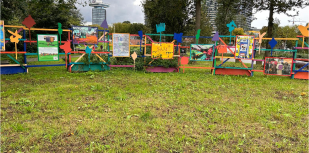
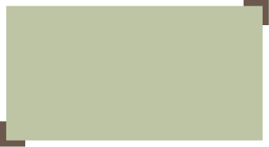

Missie



Wat willen wij?
Wij als Green Society geloven dus in een betere, groene wereld. Dit vinden wij belangrijk, omdat wij niet alleen rekening houden met de gezondheid van onze naasten, maar ook over de gezondheid van ons planeet.


Wij zijn de toekomst; wil je dat ook zijn, dan behoor je perfect bij ons!
In de wereld waarin wij leven, wordt iedereen rondom ons steeds minder bewust van hun diëet. Er wordt niet meer gedacht aan elkaars gezondheid, en de toekomst die dat kan brengen.
Daar willen wij
wat aan doen!

Door een gezond initiatief te brengen aan de samenleving, willen wij een positieve indruk én verandering maken voor de gehele wereld! Daarom zeggen wij: doe mee, en draag bij aan een gezondere toekomst!